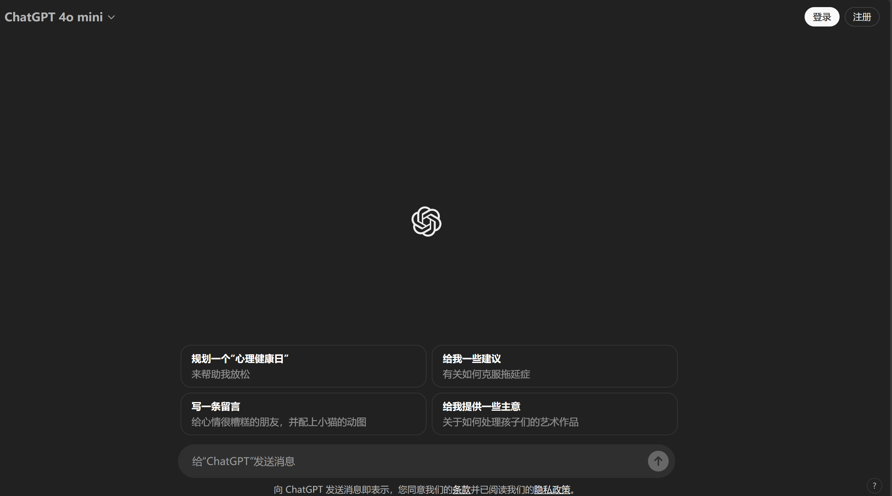
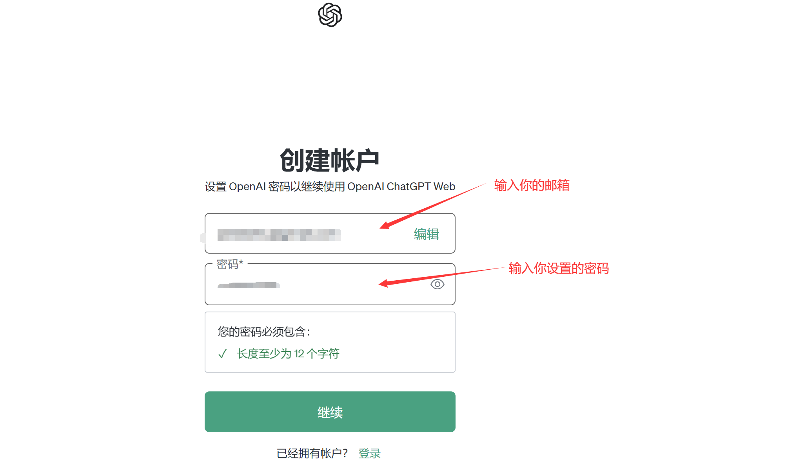
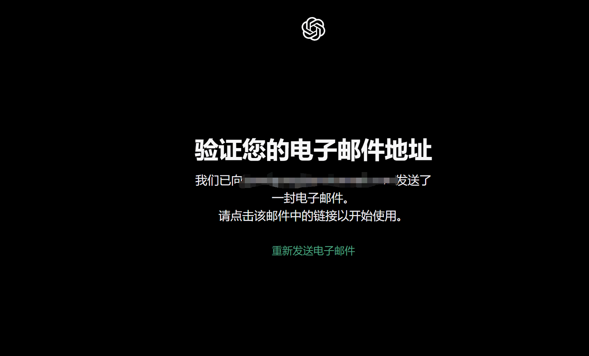
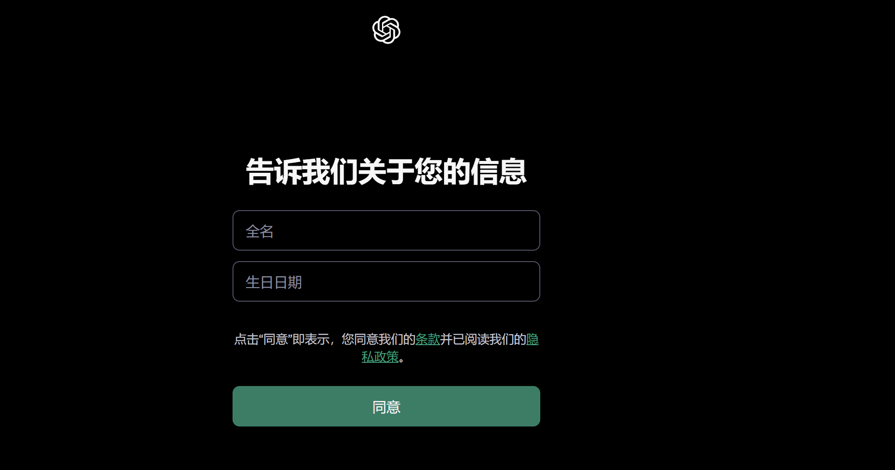
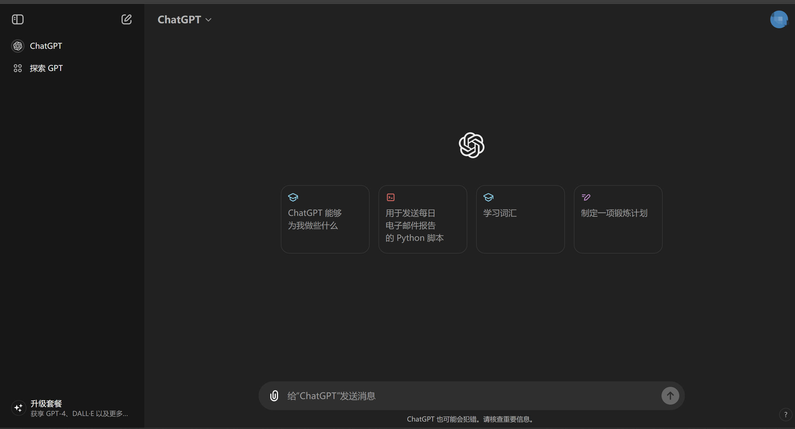
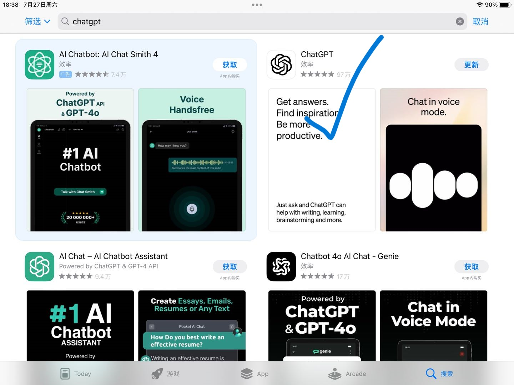
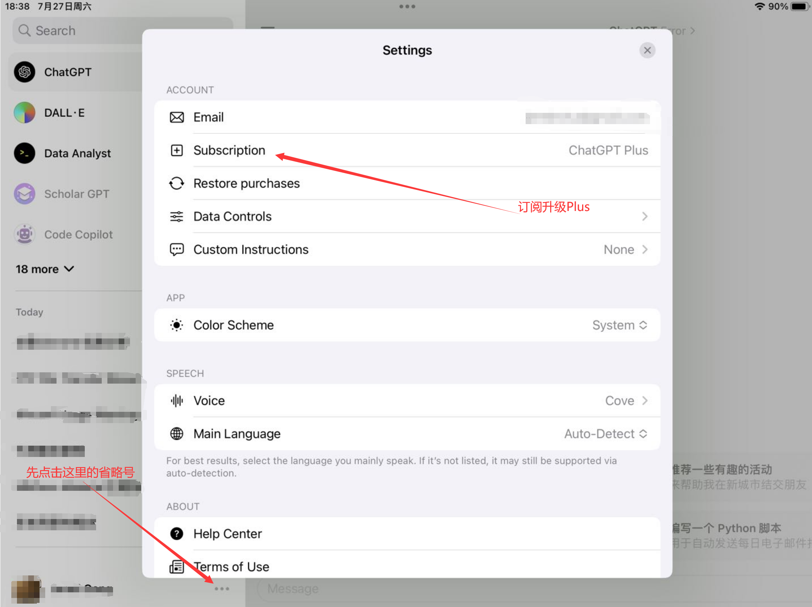

ChatGPT 的使用—— CS 0.0.0
前言：ChatGPT是目前世界上最先进的人工智能助手，它可以帮助你阅读文献、分析代码、撰写代码，甚至可以帮助你查找文献、分析数据等功能，十分强大。作为一名计算机科学专业的 Freshman，如果你不会使用ChatGPT帮助你分析和解决问题，那么你在起跑线上就已经落后别人一大截了。
先决条件
在阅读本教程之前，你应该已经掌握了：1.如何进行科学上网 2.基本的计算机知识
开始访问 ChatGPT 的官网
相信很多人一开始都不知道如何访问ChatGPT的官网，更有甚至被假的ChatGPT官网所欺骗，因此，我们首先要能够访问ChatGPT的官网，并尝试运用一些免费的功能。
注意科学上网的节点
ChatGPT的官网，毫无疑问需要使用科学上网的手段才能访问。请注意，ChatGPT目前不支持的国家和地区是：中国大陆、中国香港、俄罗斯。注意选节点的时候不要选中国香港。万一不慎选择了中国香港，被OpenAI封了IP，可以尝试换一个浏览器或者换无痕模式进行访问。
ChatGPT的官网是：https://chatgpt.com，你首先需要开启代理服务，选择一个被允许的地区节点（如日本、韩国、新加坡）。开启完代理服务后，可以直接点击链接或在浏览器中输入该网站进行访问。访问成功的界面如下图

在没有注册之前，你只能够使用ChatGPT的部分功能，要想使用目前最强大的模型，你需要进行注册乃至付费。
注册ChatGPT的账号
先决条件
注册 ChatGPT 的账号，首先需要你有一个非中国大陆地区的邮箱地址，可以使用谷歌的Gmail邮箱。关于Gmail邮箱的注册，可以参考：多图详细教你注册Google（Gmail）新账号，常见问题和注意事项-CSDN博客
首先点击ChatGPT聊天界面右上角的【注册】按钮，进入注册页面，填写你的邮箱，点击【继续】后，再输入你要设定的密码。

点击【继续】，会出现这样的界面

这时候查收你的电子邮件，点击电子邮件中的链接，出现这样的界面即为成功

填写个人信息后，点击【同意】，即可完成注册。
可能出现的Bug
在点击同意后，可能会提示【Oops, an error occurred!】，并且点击【Try again】无反应，这时候不要惊慌🤔，有可能你已经完成了注册。你可以尝试再次进入ChatGPT，点击右上角的【登录】，输入你刚刚注册的邮箱和密码，即可登录成功。
完成注册并登录后，界面是这样的，你会发现多了很多功能，继续探索吧！

付费使用ChatGPT的 Plus💎 服务
事实上，ChatGPT的免费版已经支持目前最强大的模型 ChatGPT-4o（截至发文前），只不过有一定的速度限制，如果你想无限量的使用ChatGPT的话，就需要订阅20美元/月（约合人民币144元左右）的ChatGPT Plus 服务。
经济性的建议
截至发文前（2024.7.27），ChatGPT的免费版和ChatGPT Plus 在模型上没有区别，都是最强大的GPT-4o模型，唯一的区别就是ChatGPT免费版有速度限制，每小时只能发送一定的消息，而Plus用户没有限制。如果你的使用量不大的话，不推荐现在升级Plus，可以等待更强大的模型出现。
先决条件
如果你有国外的信用卡，可以直接点击聊天界面的【升级套餐】 进行升级。
下面这种方法适合于没有国外信用卡的用户，但你需要有一个美区 Apple Store 账户和一台苹果设备 。
如何注册美区账号参见：【2024年】注册美国区Apple ID保姆级教程 - Kerry的学习笔记 (kerrynotes.com)，但是注册不够稳定，很容易出现注册失败的问题。建议开无痕模式+代理的方法进行注册。
首先确保你的苹果设备能够开启代理服务，或者使用局域网使得苹果设备能够共享局域网内的代理服务。教程见：Clash iOS 版使用教程 | Stash iOS 使用教程-Clash 爱好者、使用 Clash 加速同一局域网下其他设备 | 米白博客 (mebi.me)，总之，要让你的Apple 设备能够正常访问Google等网站。
然后在你的Apple设备上登录你刚刚注册的美区账号（要一直保持代理开启），登陆完成后，点击Apple Store 搜索 ChatGPT，下载ChatGPT的Apple 应用版本，注意不要下载错了

下载完成后，打开应用，使用你刚刚注册的账号进行登录，然后点击左下角的省略号，在里面找到【Subscribe Plus】类似的选项，这个时候就可以用你的AppStore账户的余额来进行支付啦。

如何科学地充值AppStore余额
一般要充值AppStore的余额，也需要海外信用卡。这里介绍一种科学的方法充值AppStore。
首先在某鱼上搜索 “美区礼品卡”相关字样，寻找价格合适的进行购买，得到兑换码后，回到你的AppStore（不要忘记挂代理）进行兑换即可。